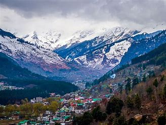
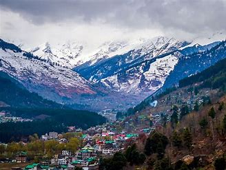

LONAVALA
Lonavala-Khandala[1] is a hill station and a Municipal Council in the Pune district, Maharashtra, India.
It is about 64 km (40 miles) west of Pune and 96 km (60 miles) to the east of Mumbai. It is known for its
production of the hard candy chikki and is also a major stop on the railway line connecting Mumbai and
From the Pune suburbs, local trains are available from Pune Junction. Both the Mumbai-Pune Expressway
as well as the Mumbai-Bengaluru highway pass through Lonavala.
KULLU MANALI

.jpeg) 

Kullu, the Valleys of Gods, is a beautiful, broad, and open valley, formed by the river Beas and lies between the two hill stations of Manali and Largi. Situated at an altitude of about 1230m, Kullu was earlier known as Kulanthpitha, which meant the ending point of the inhabitable world.
MASOORIE
Mussoorie is a hill station and a municipal board, near Dehradun city in the Dehradun district of the Indian state Uttarakhand. It is about 35 kilometres (22 mi) from the state capital of Dehradun and 290 km (180 mi) north of the national capital of New Delhi. The hill station is in the foothills of the Garhwal Himalayan range.
MUNNUR HILL STATION
The region has been inhabited by hunter-gatherer tribals like the Malayarayan and Muthuvan for thousands of years.[7] Tradition states that Colonel Arthur Wellesley, later the Duke of Wellington, was the first British person to pass through Munnar during Tippu Sultan's campaign in Travancore, but this is unsubstantiated. The first survey of the terrain was undertaken by Benjamin Swayne Ward in 1816–1817, who followed the Periyar into the Western Ghats and established a camp at the confluence of three rivers, from which the name of Munnar is derived.[8]
DARJILING HILL STATION

The Darjeeling hills (formally Darjeeling Himalayan hill region) comprise parts of Darjeeling district and all of Kalimpong district; specifically, they contain: Darjeeling Sadar subdivision, Kalimpong subdivision and Kurseong subdivision. Darjeeling town lies in the Sadar subdivision. It is located at an average elevation of 2,045 m (6,709 ft) on the Darjeeling–Jalapahar range which runs